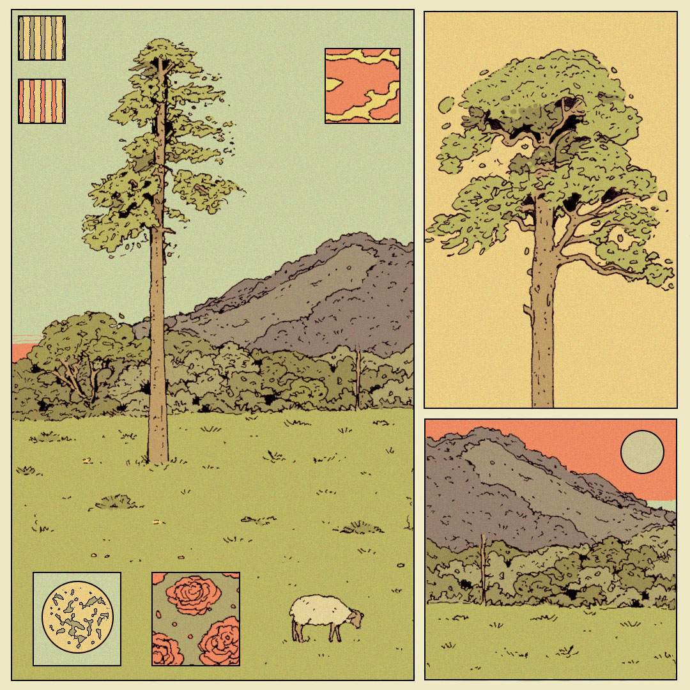

Experiment 02: Living Impressions
Description
The goal of this experiment was to first learn more about how p5.js works, and to recreate this image by Olivia Sullivan.
Technical
Relation to inspring image:
- Color: All colors come from a color picker using the source image, including borders.
- Primitives: The tree in the top right, all 3 boxes, and the sun come from primitive shapes.
- Polygons: The background mountains, "bushes" and "grass" all are made using polygons and vertex calls.
- Composition: Different random seed values lead to differently shaped mountains, bushes, grass, lines on the tree, and position of the Sun
- Life: The leaves on the tree move up and down over time, swaying. The sun goes around in a circle, changing the color of the square behind it
Reflection
I'm honestly a little conflicted as to how this assignment went. I think that the end result is wonderful, but I do not feel strong about the approach to get there. This is the most I have used ChatGPT for an assignment, and it provided invaluable assistance. I got more done in less time than I could have done by my self; however, it didn't feel like I did it. Don't get me wrong, I learned a bunch, made a lot of changes to the code, wrote the prompts to the AI, and made sure my vision for the project was executed. But I felt somewhat abstracted away from the process. I felt less involved up close and that I learned less than I would have, had I done this without AI.